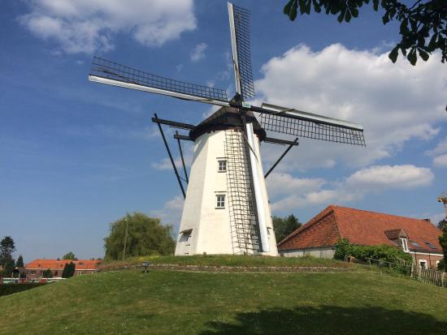

 |
DE WITTE MOLEN IN SINT-NIKLAAS |
De Molen is steeds te bezoeken tijdens de open monumentdagen en op de jaarlijkse Molendag op zaterdag 28.04.2026 van 10:00 tot 17:00.
Je kan wel bijna dagelijks de molen bewonderen tijdens een hapje of een drankje in de brasserie!
Zie hieronder de openingsuren.
| Brasserie De Witte Molen Sint-Niklaas: | |||
| Maandag | : | van 18:00 tot en met 00:30 (om de 14 kalenderdagen) | |
| Dinsdag | : | van 12:00 tot en met 00:30 | |
| Woensdag | : | van 12:00 tot en met 00:30 | |
| Donderdag | : | van 12:00 tot en met 00:30 | |
| Vrijdag | : | van 12:00 tot en met 00:30 | |
| Zaterdag | : | van 15:00 tot en met 00:30 | |
| Zondag | : | van 09:00 tot en met 20:00 | |